Cómo empezar
De la instalación a tener tus páginas organizadas, tus botones asignados y las emergencias a un toque.
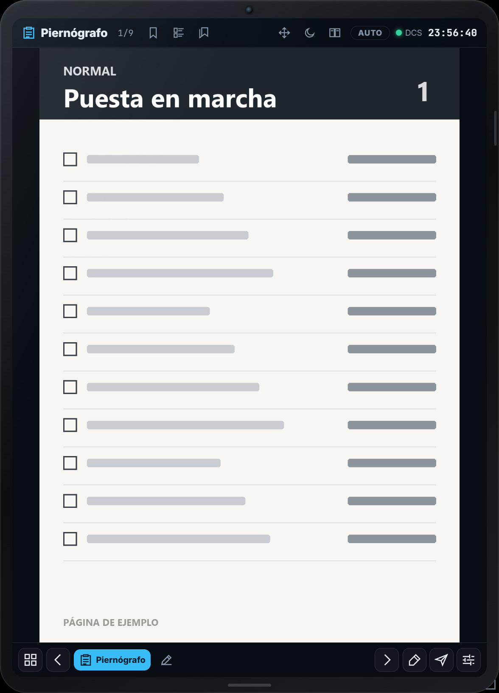
23Antes de empezar
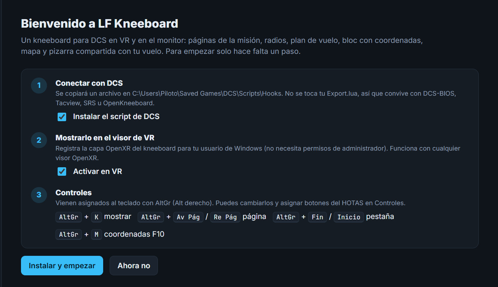
1La primera vez sale la Bienvenida: deja las dos casillas marcadas y pulsa Instalar y empezar1.
AltGr + K lo muestra y lo oculta. Hacer clic en él no saca a DCS de pantalla completa; solo escribir en un campo de texto.
Con su icono2 o desde el icono de la bandeja de Windows.
Cuatro palabras
Una carpeta con páginas en imagen. Por ejemplo, «Emergencias».
La pestaña con todas las páginas del avión que vuelas.
Una señal en una página para volver a ella al momento.
Cada herramienta del kneeboard. Todas están en la cuadrícula3.
Paso 1 de 5
Todas tus páginas viven en una sola carpeta, y dentro de ella cada subcarpeta es un juego. Se configura en Ajustes › Piernógrafo.
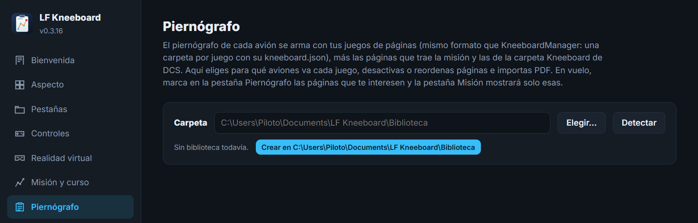
1234Documentos\LF Kneeboard\Biblioteca con un primer juego, «Mis páginas».Así queda por dentro
kneeboard.json con sus aviones, sus páginas desactivadas y su orden.Un reparto que funciona
| Juego | Qué lleva | Aviones |
|---|---|---|
| 1. Normal | Listas de comprobación de cada vuelo | Solo ese avión |
| 2. Emergencias | Procedimientos de emergencia | Solo ese avión |
| 3. Aeródromos Nellis | Planos y cartas que sirven para todos | Todos los que vueles allí |
Paso 2 de 5
Aquí llenas cada juego de páginas y decides en qué aviones sale. Primero, crear y llenar.
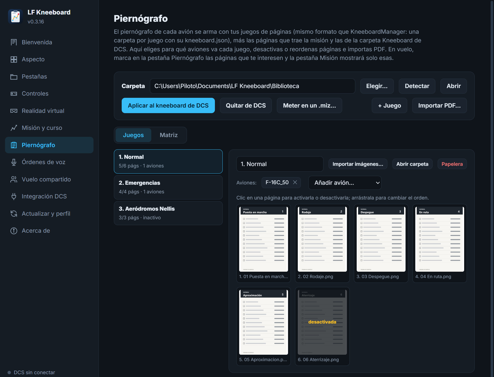
12345Paso 2 de 5 · continuación
Un juego solo sale en los aviones que le asignes. Las páginas que no quieras se desactivan sin borrarlas.
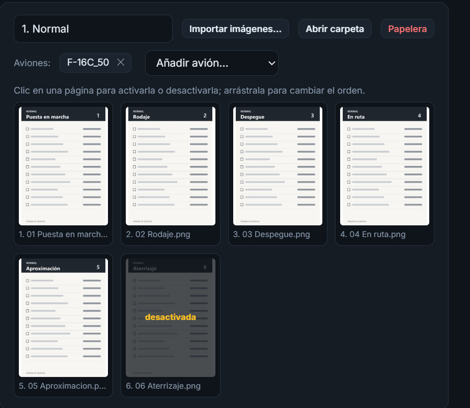
123Juegos es esta, para trabajar con un juego y sus páginas. Matriz, en la página siguiente, enseña todos los juegos y todos los aviones a la vez.
Paso 2 de 5 · continuación
Con muchos juegos y muchos módulos, la pestaña Matriz te deja repartirlos de un vistazo: una fila por juego y una columna por avión.
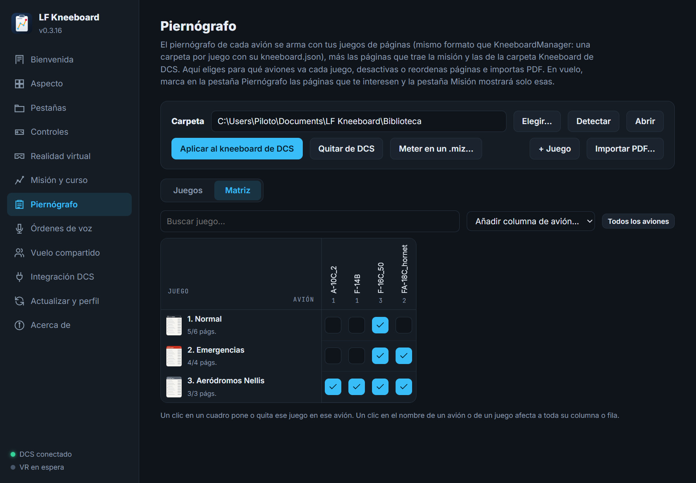
12345Son opcionales: el Piernógrafo lee tus juegos directamente.
| Aplicar al kneeboard de DCS | Copia las páginas activas también al kneeboard propio de DCS. |
| Quitar de DCS | Borra solo esas copias, las que empiezan por «LFK». |
| Meter en un .miz… | Las incluye en una misión y deja copia de seguridad. |
Paso 3 de 5
En Ajustes › Controles eliges qué tecla o botón del HOTAS hace cada acción. Funcionan aunque DCS tenga el foco.
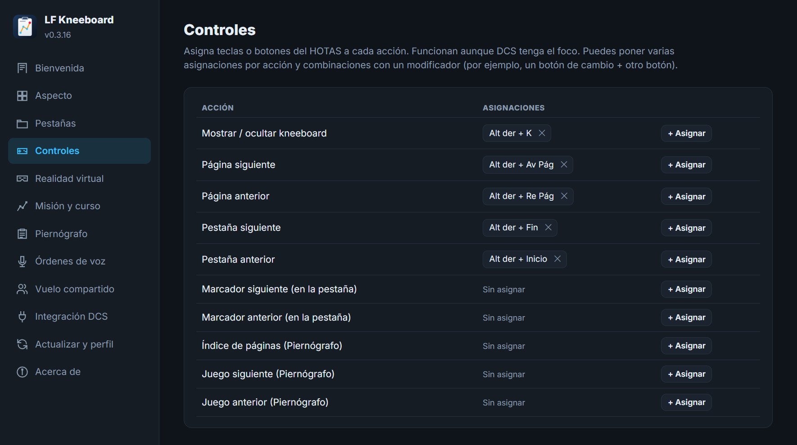
1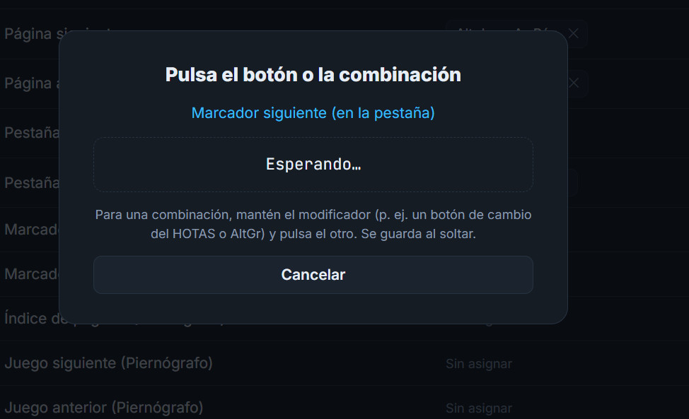
2| Acción | Qué hace |
|---|---|
| Página siguiente / anterior | Pasa de hoja. De la última vuelve a la primera. |
| Pestaña siguiente / anterior | Recorre las pestañas fijas en la barra. |
| Marcador siguiente / anterior | Salta entre las páginas marcadas de la pestaña. |
| Juego siguiente / anterior | Salta al principio del otro juego. |
| Índice de páginas | Abre las miniaturas por juegos. |
Paso 4 de 5
Con un juego para uso normal y otro para emergencias, marca la primera página de cada uno y tendrás los dos a un salto. El marcador va en una página, no en el juego entero.
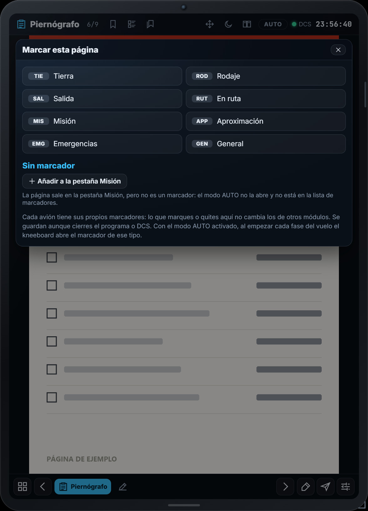
2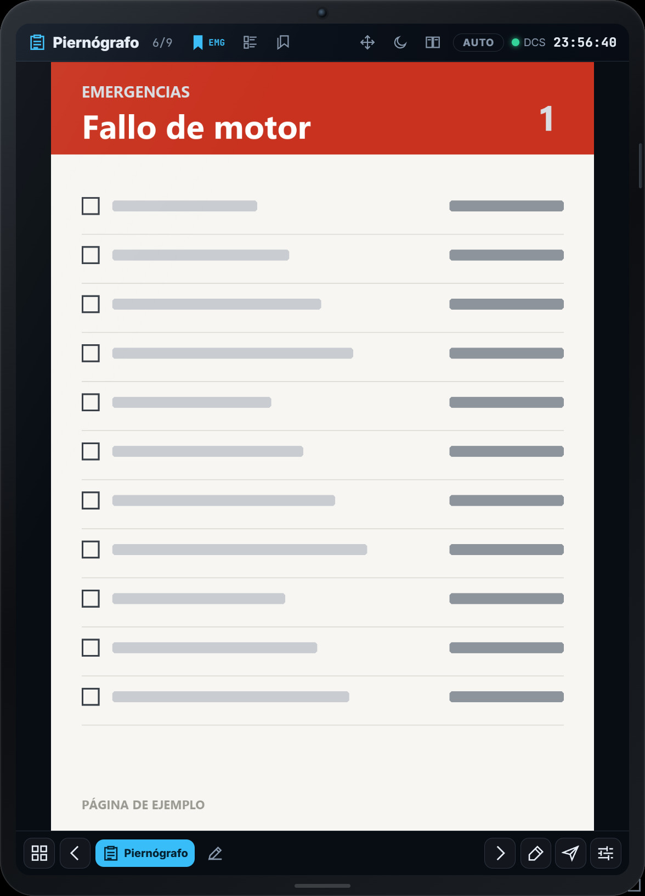
3| Página | Juego | Marcador |
|---|---|---|
| 1 · Puesta en marcha | Normal | General |
| 3 · Despegue | Normal | Salida |
| 6 · Fallo de motor | Emergencias | Emergencias |
Reúne solo las páginas que has marcado, en el orden del Piernógrafo: tres en este ejemplo, en vez de nueve. Está en la cuadrícula, y en el paso 5 ves cómo fijarla en la barra.
Si quieres que una página salga ahí sin marcarla, usa Añadir a la pestaña Misión en ese mismo menú.
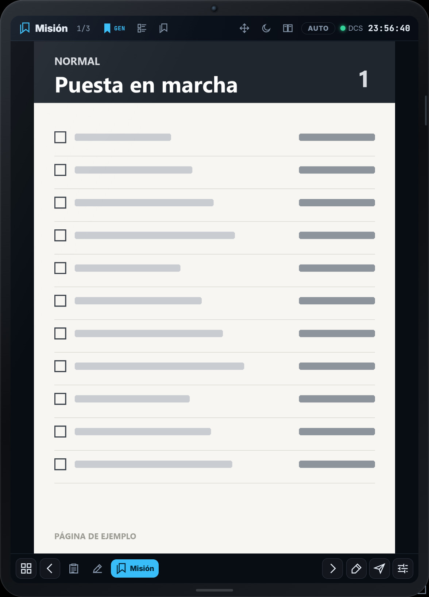
4Paso 4 de 5 · continuación
Hay varias formas de llegar a la página que necesitas. Para una emergencia, lo más rápido es un botón del HOTAS.
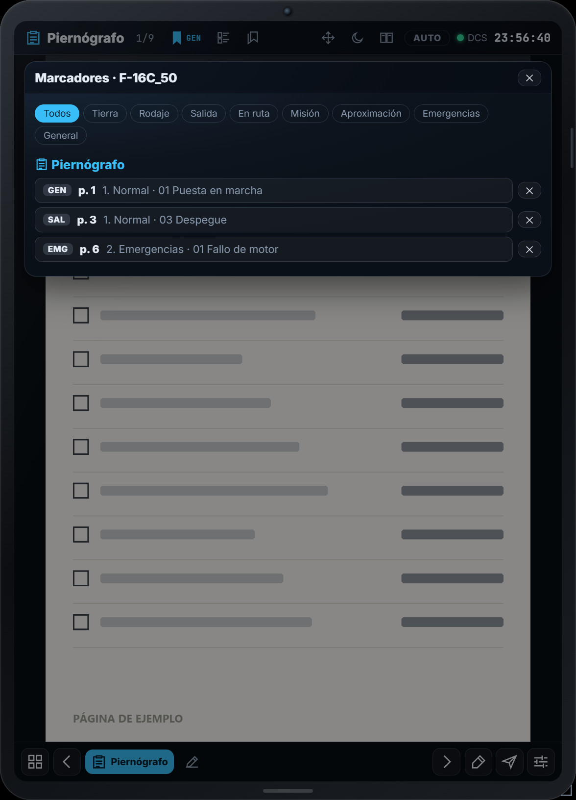
3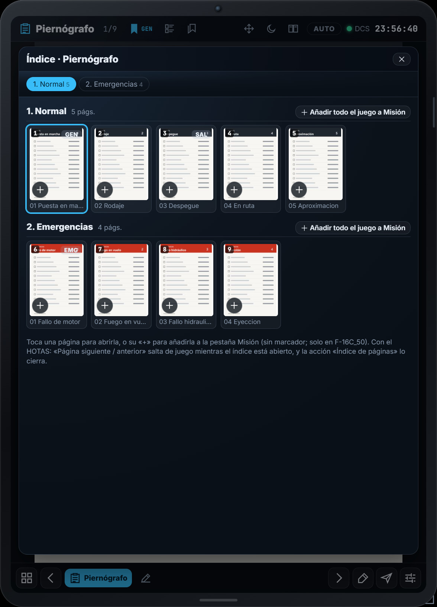
4Marca solo la primera página de cada juego y asigna Marcador siguiente a un botón. Cada pulsación te lleva de un juego al otro, estés en la hoja que estés.
La acción Juego siguiente / anterior salta al principio del otro juego, y un aviso te dice dónde has caído. Con más de dos juegos, cada pulsación avanza uno y, tras el último, vuelve al primero.
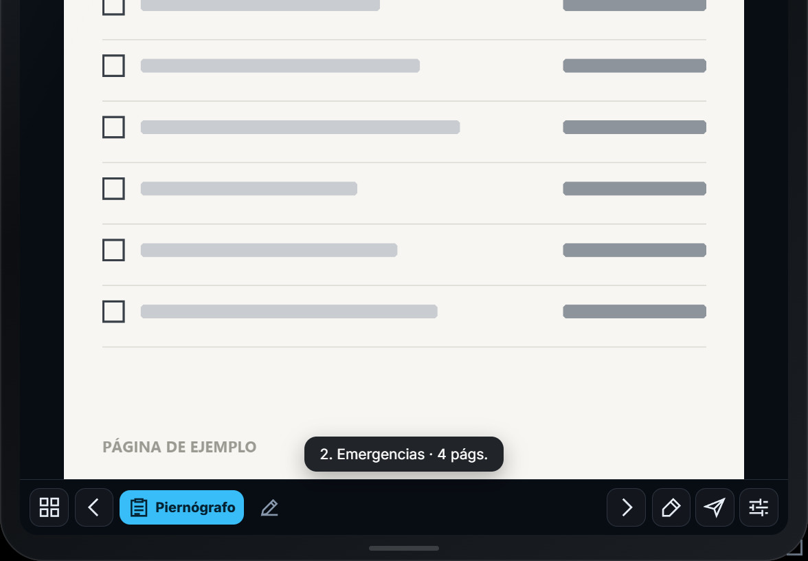
Paso 5 de 5
El preset Sencillo solo fija el Piernógrafo y el Bloc, pero el resto no se ha perdido: está en la cuadrícula. Para tener una a mano, fíjala en la barra.
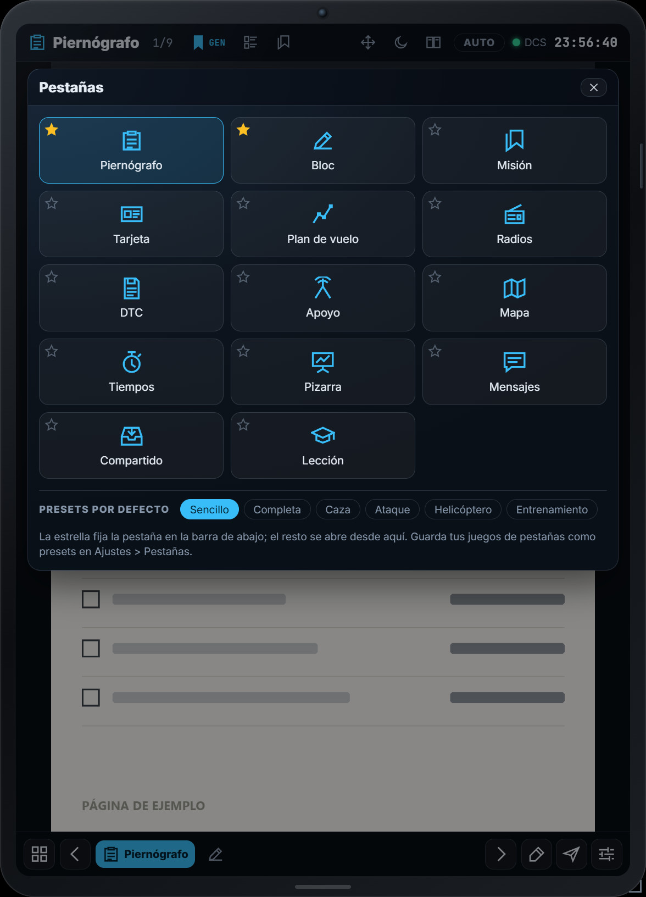
23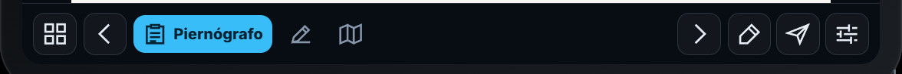
144 Mapa, ya fija junto a Piernógrafo y Bloc.
Estos tipos no vienen en ningún preset, y también puedes añadir una segunda pestaña de un tipo que ya tengas. Se hace en Ajustes › Pestañas, al final de la página.
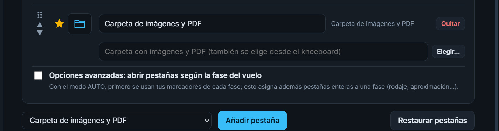
567Si aplicas otro preset se fijan las suyas, así que tu barra se perdería. Para conservarla, en Ajustes › Pestañas ponle nombre y pulsa Guardar las pestañas actuales. Saldrá en la cuadrícula, en Mis presets.
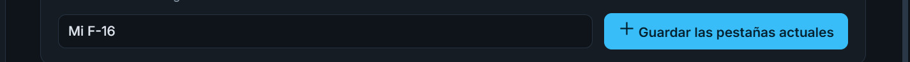
8